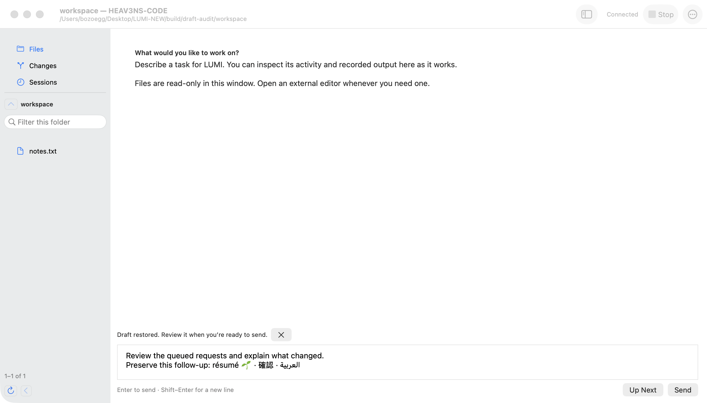

Native workspace
Light, dark, and compact concepts for directing LUMI. Generated images with illustrative task content.

Actual AppKit capture. This is a different task state, supplied for visual comparison.
1586 × 992 px · intended wide-window composition
What to look at
A clearer separation between conversation and inspection. Activity is grouped, evidence stays explicit, and the composer anchors the working area.
Carried forward
- Files, Changes, and Sessions navigation.
- Read-only evidence and visible task state.
- Native controls, system type, and keyboard conventions.
Prototype boundary
The current client uses AppKit. These images propose a finished native appearance; they are not SwiftUI renders. Native source is unchanged. Buttons inside the images are part of the mockup.
Native implementation handoff
Keep the runtime behavior and adapt the existing native components after selecting a direction. This study does not decide a framework migration.
| Surface | Proposed refinement | Existing source |
|---|---|---|
| Workspace | Clear pane headings, consistent insets, balanced reading widths. | WorkspaceWindow.swift |
| Navigation | Predictable selected rows; stronger filename / status hierarchy. | NavigationSidebar.swift |
| Activity | Compact disclosure rows; evidence labels remain distinct from task completion. | WorkspaceWindow.swift |
| Composer | More breathing room, native blue Send, persistent keyboard hint. | WorkspaceWindow.swift |
| Approval | Separate the review title from the operation name; improve detail grouping. Keep Allow Once neutral. | ApprovalReview.swift |
| Compact window | Hide navigation; show Agent / Inspect when inspection is open; keep the composer available. | WorkspaceWindow.swift |
Raster geometry and generated lettering are approximate. Sample code, counts, and commands are illustrative. A native implementation must verify resizing, focus, contrast, text selection, and accessibility with live controls. Diff coloring and colored author labels visible in the concepts are proposals, not existing behavior.